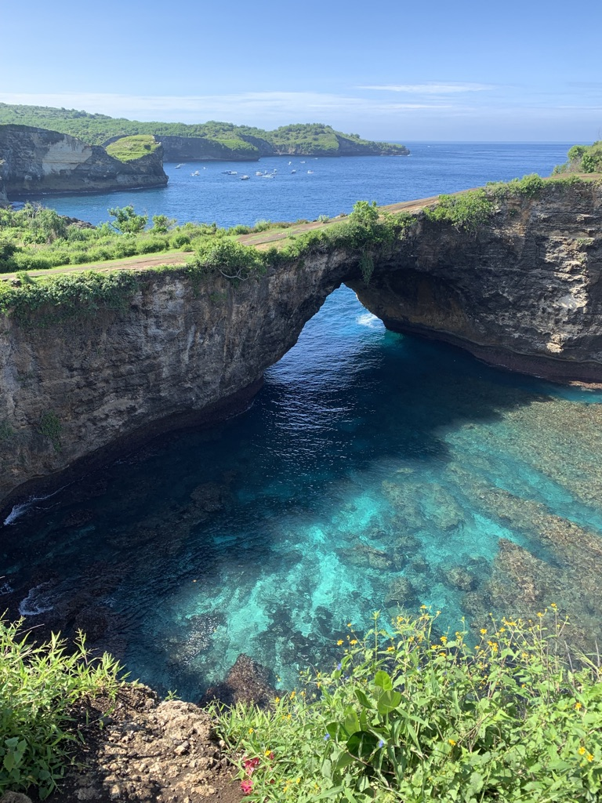

Currently I am working at Panera, and also enrolled in Launchcode. I am really excited to learn how to code and eventually find a job in tech. When I am not working I love to travel, here are some of the places I have been so far
Bali, Indonesia
My husband and I went to explore the islands around Bali. Bali is a beautiful place with amazing beaches, islands and landmarks. The people of Bali are also very nice and helpful. Bali has alot of tropical weather, meaning its always hot and humid.
Yellowstone
Yellowstone National park is a really beautiful place. The geography of the park consists of natural geysers, waterfalls, canyons and colorful springs. The park also has alot of wildife like bears and bisons. The park has many beautiful hikes and trails that you can visit and experience its beauty.
San Francsico
San Francsico is a beatiful city with many attractions. One of the biggest one is the Golden Gate Bridge. The bridge is an inconic landmark of the city and attracts many tourists every year. The city itself has many other places to experience like its Chinatown district and cable cars. Because the city is situated along the western coast, the sunsets here are sceneic and very beautiful
Rajasthan, India
Udaipur, known as the "City of Lakes", is in the state of Rajasthan, India. THe city if popular because its situated among many lakes and has histrocial palaces that are still part of the royal family.